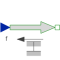
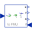

ForceExternal force acting on a drive train element as input signal |

|
Information
This information is part of the Modelica Standard Library maintained by the Modelica Association.
The input signal "f" in [N] characterizes an external force which acts (with positive sign) at a flange, i.e., the component connected to the flange is driven by force f.
Input signal f can be provided from one of the signal generator blocks of Modelica.Blocks.Source.
Parameters (1)
| useSupport |
Value: false Type: Boolean Description: = true, if support flange enabled, otherwise implicitly grounded |
|---|
Connectors (3)
Used in Examples (8)
|
Modelica.Mechanics.Translational.Examples Examples for the used sign conventions |
|
|
Modelica.Mechanics.Translational.Examples Oscillator demonstrates the use of initial conditions |
|
|
Modelica.Mechanics.Translational.Examples Sensors for translational systems |
|
|
Modelica.Mechanics.Translational.Examples Use of model Stop |
|
|
Modelica.Mechanics.Translational.Examples Preload of a spool using ElastoGap models |
|
|
Modelica.Mechanics.Translational.Examples Demonstrate the modeling of heat losses |
|
|
Modelica.Mechanics.Translational.Examples Example to demonstrate variants to generate FMUs (Functional Mock-up Units) |
|
|
Modelica.Thermal.FluidHeatFlow.Examples Two cylinder system |
Used in Components (1)
|  |
Modelica.Mechanics.Translational.Examples.Utilities Input/output block of a direct mass model |